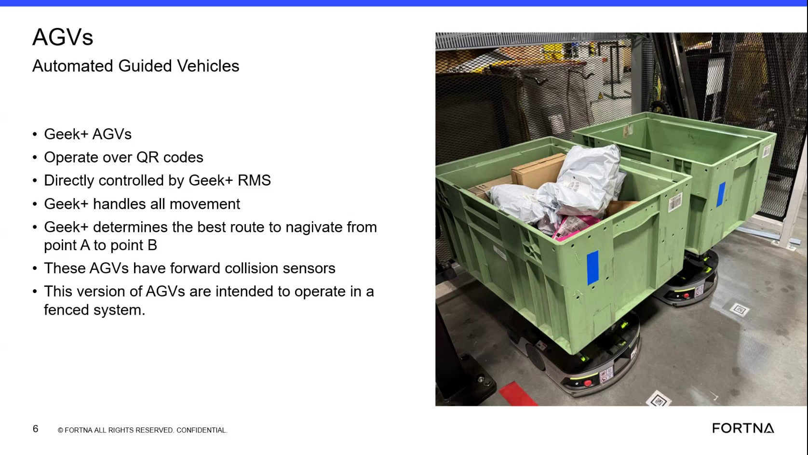

| Procedure ID | proc_interpret_robot_task_execution_flow_from_wcs_through_rms_to_agv_v1 |
|---|---|
| Title | Interpret Robot Task Execution Flow From WCS Through RMS To AGV |
| Procedure Type | reference |
| Primary Role | L1_support |
| Support Safe | Yes |
| Validation Status | needs_sme_review |
| Merge Status | source_finalized |
Use the training-video-described control flow to explain how a robot movement task originates in WCS, is queued in RMS, and is executed by RMS through commands sent to the AGV.
Use when explaining or interpreting the high-level task execution path described in the training source for robot movement requests, including where tasks originate, where they queue, and how AGVs receive execution commands.
Responsible role: L1_support
Instruction:
Identify the robot movement request or task being discussed, such as moving from one location to another.
Expected result:
A specific movement task or request is defined for explanation.
Stop or Escalate If:
Responsible role: L1_support
Instruction:
Associate the task origin with the office software described in the source as WCS.
Expected result:
The task is understood to originate from WCS according to the source.
Stop or Escalate If:
Responsible role: L1_support
Instruction:
Note that the source states the assigned tasks go into a queue that lives in RMS.
Expected result:
The task is understood to enter an RMS queue after assignment.
Stop or Escalate If:
Responsible role: L1_support
Instruction:
Interpret RMS as the component that executes queued tasks one by one by sending commands to the AGV.
Expected result:
RMS is understood as the system that executes queued tasks sequentially through AGV commands.
Screens / Images:

Stop or Escalate If:
Responsible role: L1_support
Instruction:
Use this flow to explain that the AGV does not hold the higher-level task sequence knowledge described in the source; it receives commands from RMS.
Expected result:
The user can explain that higher-level task sequencing resides with RMS, while the AGV receives execution commands.
Screens / Images:
Stop or Escalate If: